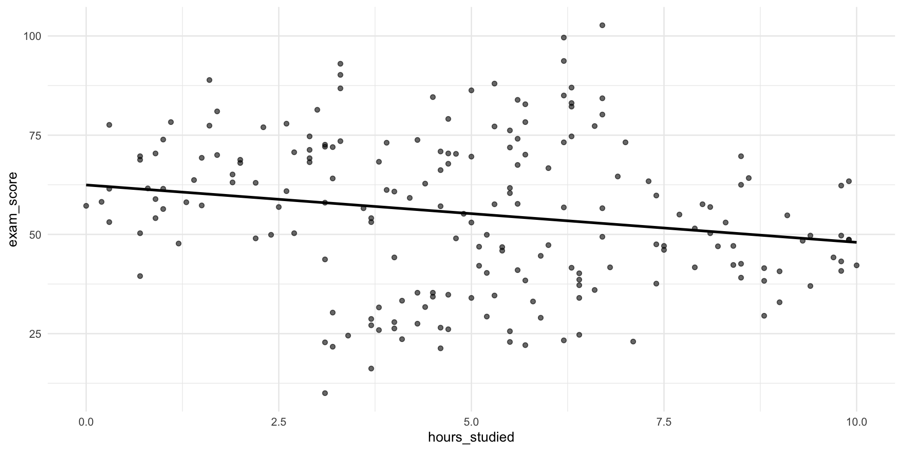
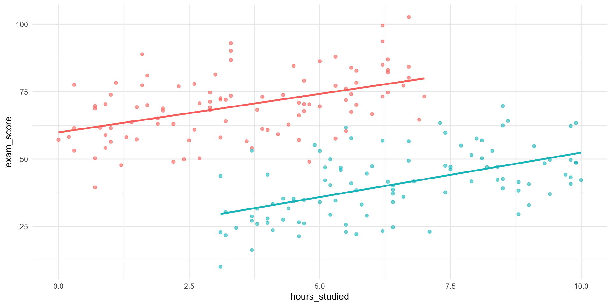
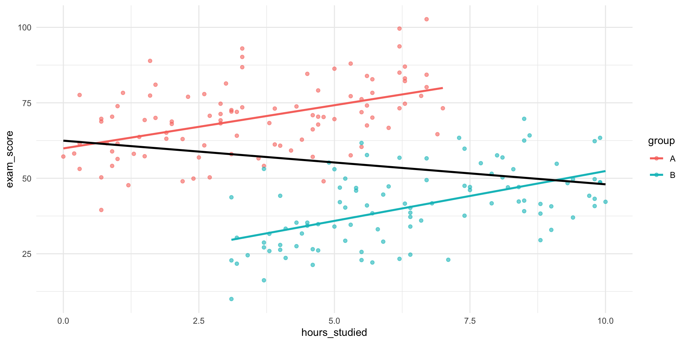

flowchart LR H[Predictor] --> E[Outcome] F[Confounder] --> H F --> E classDef adj stroke-width:3,fill:#fff; classDef exp fill:#cfc; classDef con fill:#ddd,stroke:#333; classDef out fill:#ccf; class F con; class H exp; class E out;
Week 4: Model Specification and Causal Thinking
Jesper Lindmarker
How difficult was last week?
Week 4: Model Specification and Causal Thinking
🔁 Regression Recap: What We Have Learned So Far
Over the past three weeks, we’ve built up regression piece by piece:
✅ Week 1 – Simple Regression
→ Modeling how one variable predicts another
→ Interpreting coefficients, intercept, and \(R^2\)
✅ Week 2 – Multiple Regression
→ Adding variables to separate overlapping influences
→ Understanding conditional relationships and confounding
✅ Week 3 – Interactions & Nonlinearity
→ Testing when effects depend on context
→ Using squared terms and transformations to capture curvature
🎉 Well done — you now have the core regression toolbox.
🧭 Goals of today’s lecture
Today, we’ll explore:
- Model specification
- How to decide what variables to include — and why
- Expand on the idea of confounding
- How to use causal reasoning to avoid bias
- How tools like DAGs help guide our decisions
- The difference between confounding, moderation, mediation and colliders
We will finish this 2x2

🧭 What Is Model Specification?
By now, you know how to run regression models. But today we shift to a harder question:
What should the model actually include?
A regression model is not just a calculation, it’s a story about the world we choose to tell.
- Specifying a model means deciding:
- Which variables belong in the story
- Which variables don’t
- And how each variable enters the plot (i.e. functional form: squared, interactions etc.)
- Which variables belong in the story
- We want to avoid misspecification 🧨
🎮 Some new simulated data

- What could be the reason for this association?
🎮 Some new simulated data

🎮 Simpson’s paradox

- One way to wrongly depict data
- Omitted variable bias
- One source of confounding
🔍 So What Happened?
The group a student belongs to seems to affects:
How much students tend to study
How well they tend to perform
Group belonging is a confounder — a variable related to both the predictor and the outcome
- A “common cause”
📊 What would happen in a regression?
Call:
lm(formula = exam_score ~ hours_studied, data = data)
Residuals:
Min 1Q Median 3Q Max
-47.977 -12.021 0.376 14.037 49.927
Coefficients:
Estimate Std. Error t value Pr(>|t|)
(Intercept) 62.4589 2.9543 21.142 < 2e-16 ***
hours_studied -1.4457 0.5311 -2.722 0.00706 **
---
Signif. codes: 0 '***' 0.001 '**' 0.01 '*' 0.05 '.' 0.1 ' ' 1
Residual standard error: 18.78 on 198 degrees of freedom
Multiple R-squared: 0.03608, Adjusted R-squared: 0.03121
F-statistic: 7.411 on 1 and 198 DF, p-value: 0.007063📊 What would happen in a regression?
Call:
lm(formula = exam_score ~ hours_studied + group, data = data)
Residuals:
Min 1Q Median 3Q Max
-24.9261 -6.8383 -0.4089 6.6237 24.8530
Coefficients:
Estimate Std. Error t value Pr(>|t|)
(Intercept) 59.1074 1.6688 35.418 < 2e-16 ***
hours_studied 3.0872 0.3701 8.341 1.27e-14 ***
groupB -38.3497 1.8507 -20.722 < 2e-16 ***
---
Signif. codes: 0 '***' 0.001 '**' 0.01 '*' 0.05 '.' 0.1 ' ' 1
Residual standard error: 10.56 on 197 degrees of freedom
Multiple R-squared: 0.6968, Adjusted R-squared: 0.6938
F-statistic: 226.4 on 2 and 197 DF, p-value: < 2.2e-16🎓 Simpson’s Paradox at UC Berkeley
In 1973, UC Berkeley’s grad admissions data seemed to show bias against women:
- 44% of men were admitted
- Only 35% of women were admitted
- Suggesting systemic gender bias?
🔍 But Department-Level Data Told a Different Story
When admissions were broken down by department:
- Women were more likely to apply to competitive departments (e.g., English)
- Men applied more often to less competitive departments (e.g., Engineering)
In most individual departments, women were admitted at similar or higher rates than men.
🤔 Exercise
Here are some patterns we might observe in data:
✈️ People who fly more are more stressed
🍷 Moderate wine drinkers live longer
📱 More phone use is linked to worse sleep
🐱 Pet owners report better mental health
🎵 Kids who take music lessons score higher on IQ tests
🏡 Homeowners are more civically engaged
💊 Vitamin supplement users are healthier
📚 Kids who read early succeed more in school
🏙️ Urban dwellers tend to be more politically liberalIn pairs: Pick three of these associations. For each one:
Identify a potential source of confounding.
Describe how that confounder creates a spurious association.
Example:
🍷 People who drink wine tend to live longer.
However, higher-SES individuals are more likely to be moderate wine drinkers.
And, higher-SES individuals also tend to have better access to healthcare and lower mortality.
Therefore, SES is a common cause of both wine consumption and longevity,
creating a spurious association between the two.🔍 The Importance of Possible Confounding
- Thinking through alternative explanations is at the heart of statistical reasoning.
When you attend research seminars, at IAS or anywhere else, you’ll notice that discussion often revolves around just this:
What else could be driving the observed pattern?
Learning to ask that question, and think structurally about it, is one of the most valuable skills you can develop.
🔀 From Confounding to Causal Diagrams
We’ve seen one way estimates go wrong:
- A third variable influences both X and Y
- We leave it out…
- The association becomes biased, or confounded
But confounding is only one kind of biasing structure. Unfortunately, there are many more.
- How do we find them?
- Enter: DAGs
But First: Causality recap 🔥
🔥 Causality recap
Some relationships are clearly causal:
- The sun warms the ground in the morning
- Pushing the gas pedal makes the car accelerate - Here, changing X really does change Y.
But many associations are not causal:
- Ice cream sales and drownings are correlated- This is a spurious association: it looks like X affects Y, but that’s not really the case.
Most real-world relationships are a mix:
- X affects Y
- but other variables also influence both
So the observed association is partially spurious.
Spurious associations 📉
🔥 Why This Matters (Even if We Don’t Aim for Causal Inference)
When we answer research questions, we want to avoid:
- spurious associations
- biased estimates
And we want to understand:
- in what sense our regression results are causal
- and in what sense they are not
- Spoiler: They are mostly not
DAGs ⤵️
🧭 What’s a DAG — and Why Use One?
flowchart LR H[Exposure] --> E[Outcome] F[Confounder] --> H F --> E classDef adj stroke-width:3,fill:#fff; classDef exp fill:#cfc; classDef con fill:#ddd,stroke:#333; classDef out fill:#ccf; class F con; class H exp; class E out;
- A DAG is a Directed Acyclic Graph
- It’s a way to represent causal assumptions
- Let’s you investigate alternate explanations of a pattern.
- Instead of mathematical equations.
- Each node is a variable; each arrow is a causal link (Directed)
- Time flows in the same direction as the arrows.
- No loops (Acyclic)
🏛️ Where Did DAGs Come From?
- DAGs emerged from causal inference theory
- Pioneered by Judea Pearl and others since the 1990s
- Built to formalize what needs to be adjusted for in observational research
- Instead of mathematical equations
- Now used across fields: epidemiology, economics, sociology, and CS
Not universal
Not everyone uses DAGs. They’re a framework — not a universal language in academia.
📖 DAG Terminology
- Node = a variable (e.g., education, income, stress)
- Edge (arrow) = a direct causal effect
- Directed = arrows show direction of influence
- Acyclic = no loops (you can’t cause yourself through a chain)
We only draw arrows if we believe there is a direct causal effect
But what is it good for?
🔄 Simple confounding
flowchart LR Z[Z] --> H[Exposure] Z --> E[Outcome] H --> E classDef exp fill:#cfc; classDef con fill:#ddd,stroke:#333; classDef out fill:#ccf; class Z con; class H exp; class E out;
- Which variable is the confounder?
- Z creates a non-causal backdoor path between Exposure and Outcome
- A path from Exposure to Outcome that starts with an arrow into the Exposure (a “back door” into X)
🔄 When the Confounder Has a Cause
flowchart LR A[Z0] --> Z[Z1] --> H[Exposure] --> E[Outcome] Z --> E A --> E classDef exp fill:#cfc; classDef con fill:#ddd,stroke:#333; classDef out fill:#ccf; class A con; class Z con; class H exp; class E out;
- Now Z itself has a cause Z0
- Z0 also affects the Outcome and the Exposure (through Z)
- So is Z0 also a confounder?
- Z0 is also a common cause, but indirectly.
- But importantly: Confounding lives in the backdoor path, not in a single node.
🔄 Expanding confounding
flowchart LR A[Z1] --> Z[Z2] --> F[Z3] --> H[Exposure] --> E[Outcome] A --> E classDef adj stroke-width:3,fill:#fff; classDef exp fill:#cfc; classDef con fill:#ddd,stroke:#333; classDef out fill:#ccf; class Z con; class F con; class H exp; class E out;
- Which variable is the confounder?
- Does it matter?
- Confounding matters. Not the confounder
🔁 What Is a Backdoor Path?
A backdoor path is:
any path from Exposure to Outcome
that starts with an arrow into the Exposure (a “back door” into X)
and is open (i.e. not “blocked”)
These paths carry bias/confounding
Is the mathematical definition of confounding
flowchart LR Z[L] --> F[Z] --> H[Exposure] --> E[Outcome] Z --> E classDef adj stroke-width:3,fill:#fff; classDef exp fill:#cfc; classDef con fill:#ddd,stroke:#333; classDef out fill:#ccf; class Z con; class F con; class H exp; class E out;
✅ The Backdoor Criterion
- To estimate the causal effect of Exposure on Outcome:
- Block all backdoor paths from Exposure to Outcome
- By conditioning (Yay! Another term for: Controlling/adjusting/stratifying)
- This is called the Backdoor Criterion
- How do we know we have blocked all?
- We don’t.
flowchart LR Z[L] --> F[Z] --> H[Exposure] --> E[Outcome] Z --> E classDef adj stroke-width:3,fill:#fff; classDef exp fill:#cfc; classDef con fill:#ddd,stroke:#333; classDef out fill:#ccf; class Z con; class F adj; class H exp; class E out;
✅ Practice
How could we satisfy the backdoor criterion?
1
flowchart LR A[Z1] --> Z[Z2] --> F[Z3] --> Q[Z4] --> B[Z5] --> C[Z6] --> H[Exposure] --> E[Outcome] A --> E classDef adj stroke-width:3,fill:#fff; classDef exp fill:#cfc; classDef con fill:#ddd,stroke:#333; classDef out fill:#ccf; class Z con; class F con; class H exp; class E out;
2
flowchart LR Z[L] --> F[Z] --> H[Exposure] --> E[Outcome] Z --> E Z --> H classDef adj stroke-width:3,fill:#fff; classDef exp fill:#cfc; classDef con fill:#ddd,stroke:#333; classDef out fill:#ccf; class Z con; class F con; class H exp; class E out;
🧪 DAG Exercise
Let’s build the Study Hours → Exam Score DAG together.
- Suggest variables you think belong in the graph
- Suggest causal arrows
DAG
flowchart LR %% Main causal path H[Hours studied] --> E[Exam score] %% Confounders SES[Parental SES] --> H SES --> E GPA[Prior GPA] --> H GPA --> E SES --> GPA MOT[Motivation] --> H MOT --> E SES --> MOT TIQ[IQ / Cognitive ability] --> E TIQ --> GPA SLP[Sleep quality] --> H SLP --> E PARTY[Hours of partying] --> H PARTY --> SLP F[Field of study] --> H TIQ --> F GPA --> F JOB[Part-time job] --> H SES --> JOB %% Mediator STRESS[Exam stress] --> E H --> STRESS %% Output styling classDef adj stroke-width:3,fill:#fff; classDef exp fill:#cfc; classDef con fill:#ddd,stroke:#333; classDef out fill:#ccf; class H exp; class E out; class SES,GPA,MOT,TIQ,SLP,PARTY,STRESS,F,JOB,PEER,TUT con;
🚮 This Is a Mess
As we’ve just seen, the causal structure of a social process can be overwhelming — even when we try to simplify.
There are a lot of potential confounders.
Can we ever get unbiased causal estimates?
💬 What Are DAGs Good For?
- Help clarify our causal assumptions
- Make us explicit about what affects what
- Guide us on:
- What to control for
- What not to control for
- Where bias might creep in
- Communication of assumptions
This is how we will use them in this class. Clarifying how we think and how that feeds into our models.
⚠️ Limitations of DAGs
- DAGs simplify reality — sometimes too much
- They work best for individual-level causal mechanisms
- But they struggle with:
- Feedback loops
- Moderation/Interaction effects
- Social systems with multiple interacting levels
Still — DAGs give us a structured starting point. The alternative is not communicating our assumptions.
Mediation
🔄 Mediators: Variables on the Causal Path
flowchart LR X[Education] --> M[Income] --> Y[Health] classDef adj stroke-width:3,fill:#fff; classDef exp fill:#cfc; classDef con fill:#ddd,stroke:#333; classDef out fill:#ccf; class X exp; class Y out;
- A mediator lies on the causal path from X to Y
- It can be thought of as an explanatory (behavioural) mechanism, a variable that the cause works through.
🧠 Mediator Example
flowchart LR H[Hours Studied in high school] --> G[GPA at graduation] --> A[Admission to uni.] H --> A classDef adj stroke-width:3,fill:#fff; classDef exp fill:#cfc; classDef con fill:#ddd,stroke:#333; classDef out fill:#ccf; class H exp; class A out;
- GPA mediates the effect of study time on admissions.
- Controlling for GPA removes the part of the effect of hours studied that works through achieved grades.
- Direct effect = Hours Studied -> Admission
- Indirect effect = Hours Studied -> GPA –> Admission
🔁 Mediation Exercise
Here are some observed associations:
🎓 More education → Higher income
💪 Regular exercise → Better mental health
👨👩👧 Parental SES → Child academic success
📖 Reading fiction → Greater empathy
🧳 Immigrant background → Lower political trust
⛪ Religious participation → Longer life
🌆 Growing up in cities → More liberal views
📱 More screen time → Lower school performance
👶 Having children → Shift in gender attitudes
🍻 More drinking → Worse career outcomes- In pairs, pick any three of these associations, and ask:
- What might be the mechanism explaining the effect?
- Practice by inserting a mediator — a variable that the cause works through.
- (Behavioural mechanisms might be such mechanisms)
Example:
💪 Those who exercise frequently tend to have better mental health.
Exercise improves sleep quality, and good sleep improves mental health.
Thus, sleep is a potential mediator/mechanism of the exercise–mental health effect.💡 When Would You Adjust for a Mediator?
If your question is:
“What is the total effect of Education on Health?”
❌ Do not adjust for income.
You would cut the pathway you are trying to estimate.If your question is:
“What is Education’s effect holding income fixed?”
✔️ Then you can adjust for descriptive purposes.
Causal mediation
Adjusting for a mediator does not identify the causal direct effect. That is a tricky issue and need very strong assumptions to hold.
Colliders 💥
🔀 When Controlling Creates Bias: The Collider Bias
We’ve seen that controlling for a confounder can help reduce bias.
But not every variable behaves like a confounder.
Sometimes, controlling for a variable actually introduces a false association between two variables that are otherwise unrelated.
This happens when the variable you adjust for is a common effect (of two or more variables).
We call this kind of variable a collider.
🏥 Collider Example
flowchart LR A[Genetic Risk] --> H[Hospitalization] B[Bike Accident] --> H classDef coll fill:#fdd; class A con; class B con; class H coll;
A common effect
In the general population, genetic risk and accidents are unrelated.
But among hospital patients, they may appear negatively correlated.
Here’s why: If a patient is in the hospital because of a bike accident, they are less likely to also be there because of genetic illness, and vice versa.
By restricting the sample to hospitalized people, you are conditioning on a collider, which creates a spurious association between its causes.
Collider bias
flowchart LR A[Genetic Risk] --> H[Hospitalization] B[Bike Accident] --> H classDef coll fill:#fdd; class A con; class B con; class H coll;
- The rule in terms of backdoors paths is that a collider naturally blocks a path.
- But! When you adjust for a collider, you open the path.
🧭 Another example?
flowchart LR A[Political Interest] --> T[Twitter Use] B[Extremism] --> T classDef var fill:#fff; classDef col fill:#fdd,stroke:#333; class A,B var; class T col;
- Among Twitter users, if someone is active due to high political interest, they are less likely to also be highly extreme, and vice versa.
- Yet both paths still funnel into Twitter use.
By conditioning on Twitter use, a collider, we open a spurious association between political interest and extremism. This is collider bias.
How to satisfy the backdoor criterion? ✅
3
flowchart LR H[Exposure] --> E[Outcome] Z[Z] --> L[L] A[A] --> L Z --> E A --> H classDef adj stroke-width:3,fill:#fff; classDef exp fill:#cfc; classDef con fill:#ddd,stroke:#333; classDef out fill:#ccf; class Z,L,A con; class H exp; class E out;
⚖️ Summary Table: Confounders vs Mediators vs Colliders
| Type | Where it sits | Adjust for it? | Why / Why Not? |
|---|---|---|---|
| Confounder | Common cause of X & Y | ✅ Yes | Blocks biasing backdoor paths |
| Mediator | Between X and Y | ❌ (usually) | Cuts off indirect effect; distorts total effect |
| Collider | Caused by X and Z | ❌ Never | Opens up biasing non-causal path |
🛠️ Quick DAG Exercise
Here’s a DAG for:
“Does exercise affect mental health?”
flowchart LR EX[Exercise] --> MH[Mental Health] SL[Sleep] --> MH EX --> SL ST[Stress] --> MH ST --> EX EX --> C[Gym Membership] IN[Income] --> C MH --> C classDef exp fill:#cfc; classDef out fill:#ccf; classDef con fill:#ddd; classDef med fill:#ffc; classDef coll fill:#fdd; class EX exp; class MH out; class SL,ST,IN,C con;
- What are potential confounders, mediators, colliders?
- What should you adjust for to satisfy the backdoor criterion?
🚨 Terminology Alert: Selection?
The word “selection” is used in multiple ways across disciplines:
- Selection into a state
- Healthier people marry → Marriage appears to extend life
- Sample selection bias
- Our dataset only includes people who use Twitter
- Selection as a collider
- We condition on a common effect introducing bias
These uses of “selection” are related — but not identical.
Summary: 2x2

🧨 Summary: Model Specification and Misspecification
Regression doesn’t tell us what is true.
It tells us what is true under our assumptions.
So the real skill is not running the model, it is knowing what needs to be in the model, what must stay out, and why.
Common ways models go wrong:
Omitted confounders
→ creates spurious associationsAdjusting for mediators
→ risk of underestimating total effect of the causal pathway you want to studyControlling for colliders
→ creates spurious associationsAdding variables without justification
→ inflates variance, adds noise, risks overfitting
🧭 The Research Process
What parts of a typical quantitative empirical project have we covered in this course:
- Formulating a research question
- Reading literature
- Developing a hypothesis
✅ Drawing assumptions or a causal diagram (NEW for today!)
- Study design
✅ Collecting/Exploring data
✅ Specifying the models (Also today)
✅ Fitting statistical models
✅ Interpreting results
- Drawing conclusion
See you later!

Confounding Variables (XKCD)
DAG for lab
flowchart LR AB[Childhood abuse] --> SC[Substance use] AB --> MH[Teenage Mental health] AB --> VI[Violent crime score] EDU[Education] --> VI FI[Parents income] --> EDU FI --> AB MH --> SC MH --> VI SC --> VI VI --> IM[Imprisonment] PO[Prior Economic crime] --> IM FI --> PO classDef exp fill:#cfc; classDef out fill:#ccf; classDef con fill:#ddd,stroke:#333; classDef coll fill:#fdd; class MH exp class VI out; class IM coll;